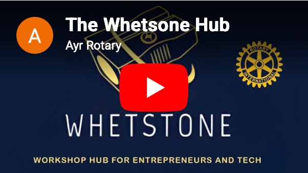
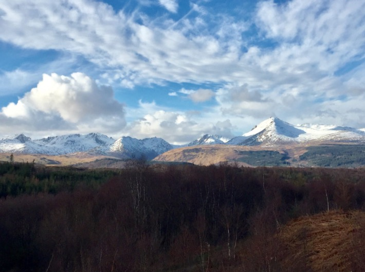
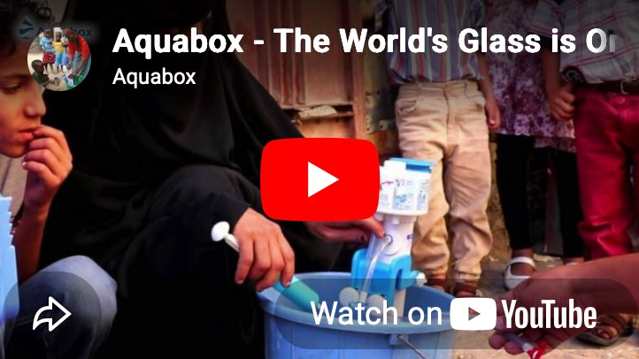

Upcoming Meetings
AGM & Club Business
Meeting
When: Tue May 19 18:00 - 19:30
Where: The Stravaig - 11 Miller Road, Ayr, KA7 2AX
Rotary Breakfast
Meeting
When: Thu May 21 08:30 - 09:15
Where: Cafe 51 - 51 Beresford Terrace, Ayr
Event Booking - Members
March 2026: We have introduced a new booking system using WhatsApp. Anyone having difficulties should contact Bob Cherry.
Easyfundraising
Easyfundraising is a simple way for the club to raise money. Just sign up by scanning the code below and when you shop online, a percentage goes to the club.
It costs you nothing extra - the retailer pays it.
When you scan the code, or click this link, you will be taken to a website where you can find a full explanation.
Where and When
Evening meetings: Usually in The Stravaig Restaurant, 11 Miller Road, Ayr KA7 2AX every Tuesday except Council Meeting weeks.
Breakfast chat: Cafe 51, 51 Beresford Terrace, Ayr, first and third Thursday in the month, 8.30am - 9.30am.
The Whetstone Tech Workshop
Ayr Rotary have led the way in setting up a great new initiative for young entrepreneurs in the tech industry. Find out more.

Have you checked our Facebook recently? There is a lot more going on thanks to our new administrator.
New Members Welcome!
Thinking of joining the Rotary Club of Ayr?
We are one of the largest and most active clubs in Ayrshire, and indeed in the whole of District 1320, which covers all of south Scotland. Come along to a meeting to find out why these people joined our club.
Treasure Chest
Would a cash donation help your organisation?
We offer a monthly payout to individuals or organisations of up to £250. The qualifying rules are simple. Find out more.
Rotary & the Environment
Rotary International's approval in 2020 of a new area of focus, and the hosting in Glasgow in November 2021 of the COP26 international conference, has prompted consideration of how environmental problems facing the world might best be resolved.
Although we might feel individually helpless faced with such enormous problems, we can all make our own small contributions if we THINK GLOBAL - ACT LOCAL.
Read MoreLatest News
Photo of the Month Award
This month's winner is Douglas Haddow with "Arran Mountains". Click for full image.

Upcoming Events for Members
- Annual Charity Golf Day - Belleisle Golf - Friday 8 May 2026
- Careers Fair - Thursday 14 May 2026
- Ayrshire Alps Cycling Sportive - Saturday 6 June 2026
Get Involved
We are very keen to have non-members assist in some of our projects. This is a great way to help the local community without any commitment to joining.
You may wish to help at the local Food Bank or on the Ayrshire Coastal Path. Or work on our various youth activities. Read more.
Or you may wish to make a donation, which allows us to help others.

Aquabox Video
One of our major on-going projects is to support Aquabox. Have a look at their new video below.
More information on our Aquabox page.
